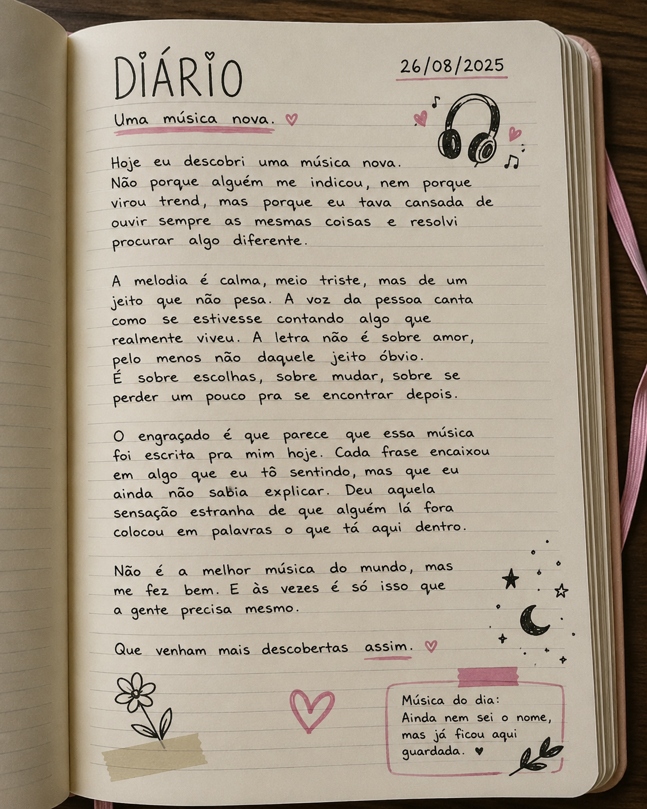
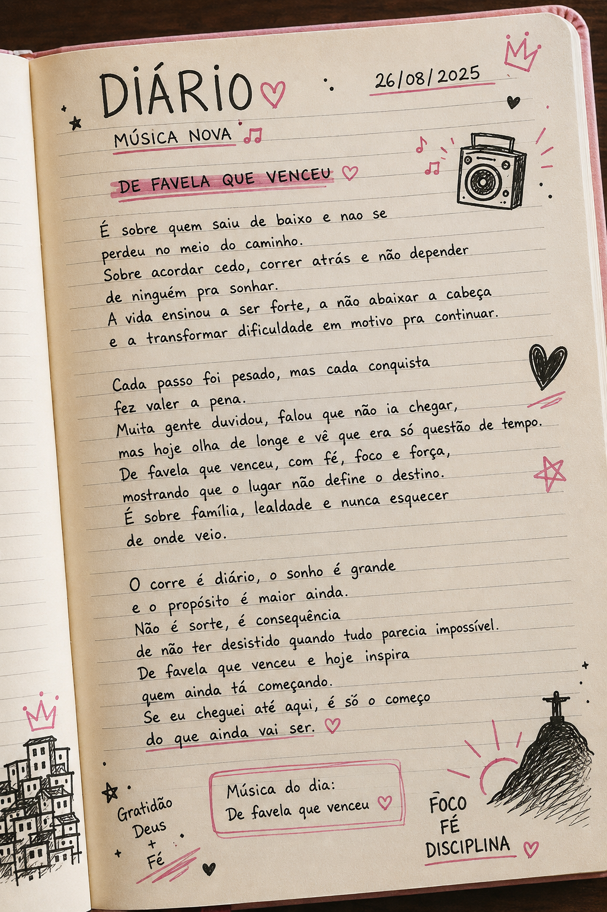

O que a Nayara está fazendo?
Por: Nayara
Contando o meu sonho

Motivação

Minha vida a partir daqui
![Um diário aberto reúne uma música que conta o sonho de infância de se tornar MC, revelando a admiração pelos artistas, a vontade de subir aos palcos e a determinação para transformar esse objetivo em realidade. A página é decorada com corações, estrelas, notas musicais e uma ilustração de coroa em tons de rosa, acompanhada por uma caneta rosa. Ao lado, uma fotografia de MC Nayara mostra a artista usando um conjunto esportivo preto, com expressão confiante e postura marcante. Na parte inferior do diário, a frase Sonhos não cabem em gavetas. Se escrevem. Se vivem. Se realizam. reforça a mensagem de persistência, foco e realização dos próprios sonhos.](Diário de uma MC.png)